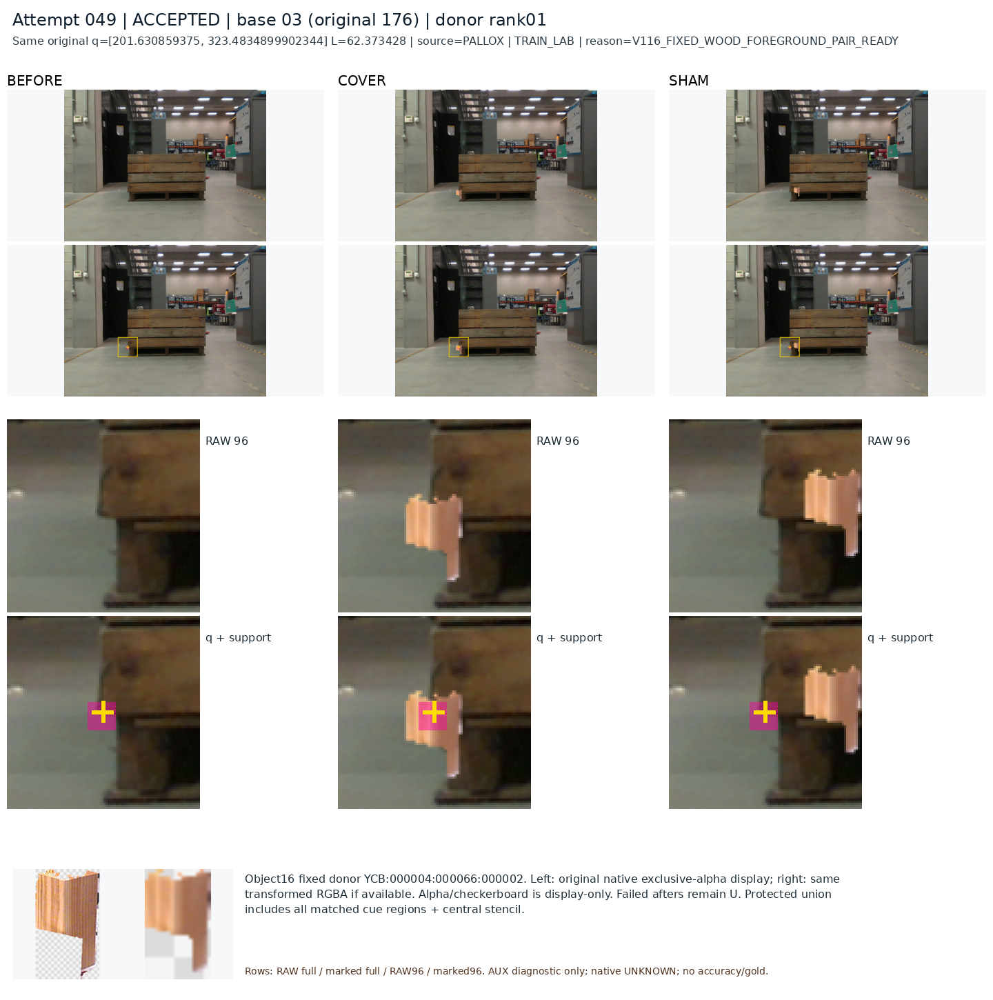

성공과 실패를 실제 crop으로 확인했습니다
현재 목표가 너무 높아서 안 된다는 증거는 없습니다. 다만 현재 방법은 아직 외부가림을 잘 구별하지 못합니다. C12는 보이는 점을 목재601/616(97.6%)·정사각형531/531(100%) 살리지만, 외부가림은 각각8/29(27.6%)·6/61(9.8%)만 잡습니다.
아래는 저장된 초기 q·L·판정을 유지한 사례입니다. 이번 진단의 새 학습·모델 추론·좌표 교정·PnP는 모두0입니다. 전체9사례·네 모델의 지표와 원본 보기
왼쪽 위: 보임 성공 / 오른쪽 위: 외부가림 성공
왼쪽 아래: 외부가림 실패 / 오른쪽 아래: 야간 보임 개선

노랑＋는 초기 q, 하늘색 원은 기존 reference r입니다. D=보임 응답, H=hidden 응답입니다. 무표시 crop과 좌표 표시 패널을 분리했습니다. E의 r은 가려진 위치의 추정/미검증 좌표이므로 작은 q-r도 정확한 위치의 증명은 아닙니다.
공통되는 문제와 아직 확정하지 못한 부분
9사례는 성공·실패 조건별 진단 표본입니다. 공통 모양을 전체 빈도나 유일한 원인으로 단정하지 않았습니다. 현재223평가는 과거 개발에 노출된 자료이며 새 blind holdout이 아닙니다.
콘이 충분히 보이는데도 놓친 사례

이 사례는 v61·기존 실사 모델·C11은 hidden, C12만 D입니다. 새 모델이 항상 좋아진 것은 아닙니다. 같은 원본·context·L의 다른 q인259/256도 C12 판정이 갈리므로 전체 배경 하나만으로 원인을 확정할 수 없습니다.
이미 공개 데이터에서 확인한 보완점
현재 평가를 보기 전 공개 source 진단에서 목재를 가림 물체로 쓰는 TRAIN 역할 누락과 cover-sham 차이는 충분한데 가린 사례 자체는 D인 문제가 확인됐습니다. 이를 검증할 동일 재질 대조 자료를 준비했습니다.448개 시도 중62쌍이 기하·픽셀 조건을 통과했고, 실패386쌍은 U로 남겼습니다. 원 q를 옮기지 않았습니다.

위 대조는 원래 보이던 목재 단서를 같은 재질로 가리거나 옆으로 옮긴 통제된 보조 학습 후보입니다. 붙여넣기 경계·밝기·그림자 차이가 있고62쌍 모두 PALLOX라 자연 가림의 정답이나 실제 성능 개선으로 해석할 수 없습니다. 새 head에는 아직 학습하지 않았습니다.
공개 SAM 실험에서는 어노테이션의 팔레트와 초기 추론의 팔레트가 다른 사례도 확인했습니다. 대상이 연결되지 않은 mask를 자동 가림 정답으로 사용하지 않는 것이 필요합니다.
목표의 범위
초기 q를 고정한 채 해당 대상의 기대한 국소 단서가 직접 보이는지·외부 물체에 가려졌는지를 판단합니다. 자기 가림은 말씀하신 초기 기하 경로로 먼저 다룹니다. 가시성 응답을 좌표 정답 검증으로 해석하지 않습니다.
이 범위에서 성공 사례가 있으므로 목표를 포기할 근거는 없습니다. 모든 흐린 작은 crop에서100% 답을 내는 가능성은 입증되지 않았습니다. 현재 필요한 것은 목표를 키우는 일이 아니라 대상·부품·라벨을 일치시키고, 공개 source에서 D와 E의 절대 판정 및 보류율을 함께 검증하는 일입니다. 이번 평가 그림으로 모델·문턱·checkpoint를 고르지 않습니다.
전체9사례와 저장 지표 · root의 실제 관찰·해석 기록